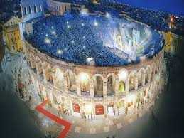
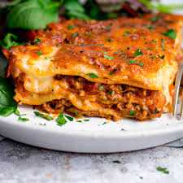

The Historian
Think of Italy and the country’s rich history is bound to come to mind. Antiquity, renaissance, modernity… century after century, Italy has left its undeniable marks on western culture.
Plenty of these marks, thanks to some amazing conservation efforts, are luckily still around for us to marvel at today!
Places to visit
The Colosseum
The Colosseum is a site like no other. Beyond a shadow of a doubt, nothing represents the sheer power and magnificence of the Roman Empire like this stunning piece of ancient architecture. A visit offers an insight into the lives of Roman citizens and those who had the misfortune of fighting there.
In particular, it is now possible to tour the underground hallways and corridors where the gladiators of ancient Rome would prepare to fight and ponder their mortality. Also recently opened are the higher areas of the structure, from where you can take in views of the Roman Forum. There is a museum within the Colosseum with a wealth of interesting artifacts and information and audio guides are available in a number of languages.
Leaning Tower of Pisa
The Leaning Tower of Pisa is one of the world’s most famous buildings, particularly due to its leaning stance which leaves it forever appearing to be toppling over. The tower began to lean very early on in its construction, apparently around the time of the construction of its third floor. The reason for the lean is that the ground on which it was built is sandy and unstable and the foundations used for the tower were insufficient to cope with this.
Today, visitors can admire the ornate white marble structure and climb the 186 feet to the top of the Leaning Tower of Pisa up a staggering 300 steps.
Saint Mark's Basilica
Saint Mark’s Basilica is a world famous Byzantine cathedral in Venice’s St. Mark’s Square, sometimes known as Chiesa d’Oro or “Church of gold”. Every aspect of the basilica is on a grand scale, from its three-part façade with ornate theological carvings to its Greek cross-shaped interior with its ceilings covered in golden mosaics. In fact, the basilica is so elaborate that its entrance or “narthex” is intended to prepare visitors for what they are about to see.
Guided tours are available or an independent walk around St Mark’s Basilica only takes approximately ten minutes to half an hour. There is also a museum and access to the bell tower.

Duomo di Milano
The most visited spot in Milan is its great gothic cathedral, the largest of its kind which can hold up to 40,000 people inside. Its construction began in 1386, with the purpose of modernising the area after Gian Galeazzo Visconti came into power. But even so, it took five whole centuries for the masterpiece to be completed. During this time, many architects, artists and sculptors worked on its construction, resulting in a building which merged the Gothic and Romanesque styles.
The Duomo di Milano is covered is beautiful white and pink marble, only upstaged by the openwork pinnacles and spires which decorate the roof. These are adorned with sculptures as well, and as a tourist, you may walk along the roof terrace and appreciate them, as well as the unrivalled views of the city from above.
Things to do
Step Inside Ancient Rome
An insider tour of one of the landmarks can take you deeper into the history and put the other sites into perspective.
The best place for this is the Colosseum, where newly opened underground areas are accessible by visitors who book in advance and to those on in-depth tours. The latter gives the best introduction to what happened here, as a knowledgeable guide explains the maze of tunnels, passages, and cells deep under the arena floor, where the spectacles delighted Roman audiences.
See an Opera in Verona's Roman Arena
You don't need to be an opera lover, or even like music, to be enthralled by the spectacle of a full-scale production in Verona's third-century Roman arena. And for those who do love opera, it's a thrill of a lifetime, right up there with opening night at La Scala.
Go on a pilgrimage to the Vatican
Vatican City is actually its own state within Italy, although you can only visit this landlocked area by first travelling to Rome.
If you are in the region then you should definitely consider swinging by one of the most important religious spots in the world, which is home to powerhouses such as the Piazza San Pietro and St Peter’s Basilica.
Where to stay
Firenze Number Nine Florence, Tuscany, Italy
If you're looking to combine art and wellness in Florence, this four-star boutique hotel, in a buzzy central location, might fit the bill. After a day's sightseeing, you can pamper yourself in the spa, work out in the gym, or lounge by the fire midst contemporary art and urban-chic furnishings.
Gran Meliá Rome Rome, Italy
When the Gran Meliá Rome on the panoramic Gianicolo Hill bills itself as an urban resort, it doesn’t oversell. Its location in the heart of historic Rome is undeniably urban, while its lush grounds and pools, fine-dining, glam lounge and elegant spa create an all-inclusive, luxury-resort atmosphere.
Mandarin Oriental, Milan Milan, Lombardy, Italy
With an enviable location in the city’s modish Montenapoleone district, Milan’s Mandarin Oriental takes inspiration from 1940s Milanese interior décor with soft wall tones and oak wood fittings. Indulge in a two-Michelin starred meal or relax at the elegant Spa with treatments that blend Eastern and Western therapies.

Booking.com loves Italy! How about you?
More choices, more destinations.
What to eat
Lasagne
Believed to have originated from the city of Naples, this well-loved and yet another classic Italian dish is made by baking sheets of lasagne pasta layered with cheese, ground meat, vegetables and different varieties of sauces, such as the ragù, bechamel or tomato sauce. This dish should definitely not be missed out on if you want to have a taste of true Italian cuisine.
Gnocchi alla Sorrentina
A hearty first course of the Campania tradition, these are potato gnocchi cooked and seasoned with tomato sauce, mozzarella cheese, parmesan and basil. They are then baked au gratin and served warm.
It’s a pretty simple dish to make but truly irresistible and always a success.
Arancini
Crisp and golden brown, arancini refers to a dish of stuffed rice balls. The rice balls are fried after being coated in a dusting of crunchy breadcrumbs.
These rice balls are usually filled with ragù, tomato sauce, mozzarella and peas. Similar to pasta and pizza dishes in Italy, there are a diversity of regional variations of the arancini. The regional specialties are made with different fillings and shapes depending on the location that the dish is prepared in.